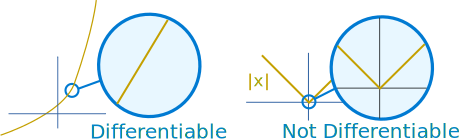
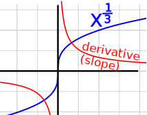
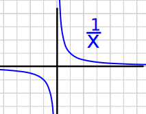
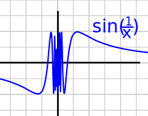
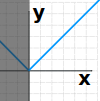

Differentiable
Differentiable means that the derivative exists ...
Example: is x2 + 6x differentiable?
Derivative rules tell us the derivative of x2 is 2x and the derivative of x is 1, so:
Its derivative is 2x + 6
So yes! x2 + 6x is differentiable.
... and it must exist for every value in the function's domain.
DomainIn its simplest form the domain is |
 |
Example (continued)
When not stated we assume that the domain is the Real Numbers.
For x2 + 6x, its derivative of 2x + 6 exists for all Real Numbers.
So we are still safe: x2 + 6x is differentiable.
But what about this:
Example: The function f(x) = |x| (absolute value):
| |x| looks like this: |  |
At x=0 it has a very pointy change!
Does the derivative exist at x=0?
Testing
We can test any value "a" by finding if the limit exists:
lim h→0 f(a+h) − f(a) h
Example (continued)
Let's calculate the limit for |x| at the value 0:
In fact that limit does not exist! To see why, let's compare left and right side limits:
The limits are different on either side, so the limit does not exist at x=0
f(x) = |x| is not differentiable at x=0
A good way to picture this in your mind is to think:
As I zoom in, does the function tend to become a straight line?

The absolute value function stays pointy at x=0 even when zoomed in.
Other Reasons
Here are a few more examples:
 |
The Floor and Ceiling Functions are not differentiable at integer values, as there is a discontinuity at each jump. But they are differentiable elsewhere. |
|  |
The Cube root function x(1/3) Its derivative is (1/3)x-(2/3) (by the Power Rule) At x=0 the derivative is undefined, so x(1/3) is not differentiable, unless we exclude x=0. |
|
 |
At x=0 the function is not defined so it makes no sense to ask if they are differentiable there. To be differentiable at a certain point, the function must first of all be defined there! |
 |
As we head towards x = 0 the function moves up and down faster and faster, so we cannot find a value it is "heading towards". So it is not differentiable there. |
Different Domain
But we can change the domain!

Example: The function g(x) = |x| with Domain (0, +∞)
The domain is from but not including 0 onwards (all positive values).
Which IS differentiable.
And I am "absolutely positive" about that :)
So the function g(x) = |x| with Domain (0, +∞) is differentiable.
We could also restrict the domain in other ways to avoid x=0 (such as all negative Real Numbers, all non-zero Real Numbers, etc).
Why Bother?
Because when a function is differentiable we can use all the power of calculus when working with it.
Continuous
When a function is differentiable it is also continuous.
Differentiable ⇒ Continuous
But a function can be continuous but not differentiable. For example the absolute value function is actually continuous (though not differentiable) at x=0.